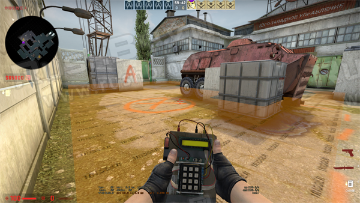
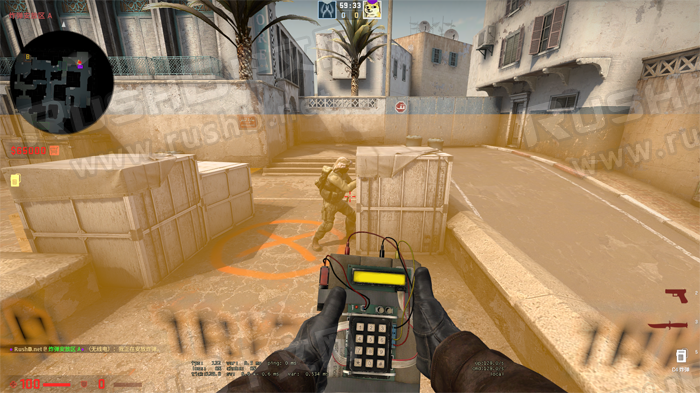
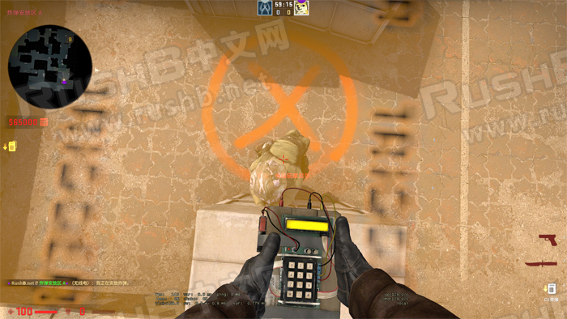
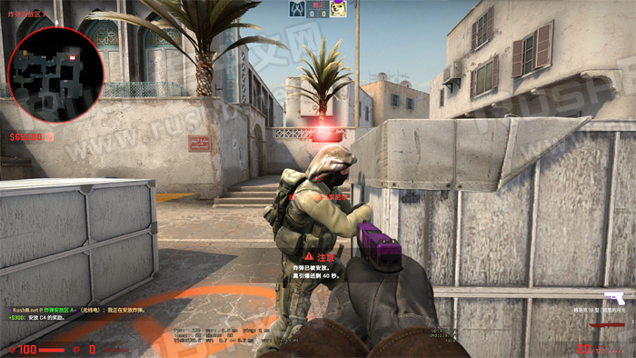
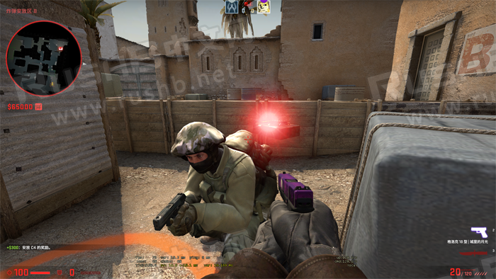
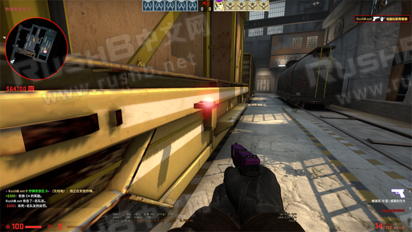

CSGO RushB中文网
CSGO RushB中文网
本文将介绍CSGO控制台指令showtriggers_toggle，用于显示地图中的触发区域，包括出生点购买范围，以及下包区域等，玩家可以通过显示后者进一步研究地图。另外，本文还会介绍空中C4的下包方法，即让C4浮空悬空，虽然不适合实战，但可以了解下。
显示下包区域
进入地图后，控制台输入：
sv_cheats 1;showtriggers_toggle;
这样，地图包点会显示橙色半透明方块（若有阴影覆盖则显示灰色），玩家只要与橙色方块接触就可以下包，通过这个方法仔细研究具体的下包位置。

浮空C4下包方法
注意本方法并不实用，仅用于介绍。空中C4的原理就是让下好的C4落到队友头上，从而浮空，所以要求地图的下包区域要高且有能站立的掩体，比如沙2的A、B包点，而其他地图炼狱小镇、殒命大厦等地图下包区域低矮，不能使用这个方法。
比如沙2的A点，下包区域够高，玩家可站在箱子上下包。

C4玩家站在箱子上，队友站在C4要落下的位置，注意箱子要比队友高，不能站在队友头上，如图，站好位置就可以直接下包。

完成，下好的C4没有碰撞模型，但仍可以被拆掉。

同理，沙2 B点以及火车包点都可以这样下：

